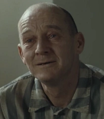
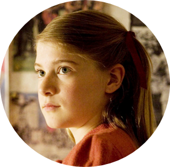
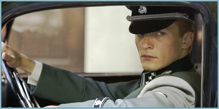
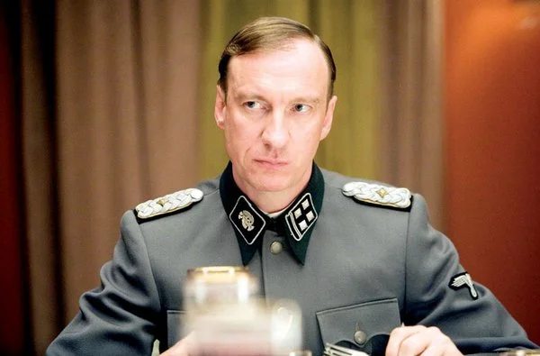
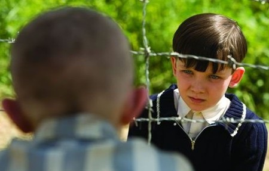
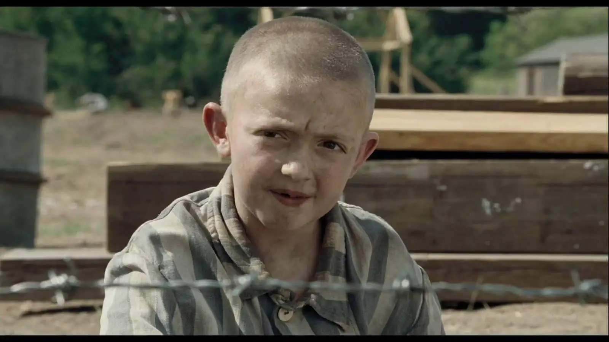

EL NIÑO CON LA PIJAMA DE RAYAS
Mark Herman como director
UN LIBRO MUY SIGNIFICATIVO PARA LAS PERSONAS QUE LO LEEN
Berlín, década de 1940. Bruno, de ocho años, vuelve a casa después de jugar con sus amigos del colegio para descubrir una actividad febril en su casa: su padre, un oficial nazi, ha sido ascendido y su madre está preparando una fiesta. Bruno no entiende qué celebran ya que el nuevo destino de su padre es fuera de Berlín. Toda la familia tendrá que trasladarse al campo, obligándole a dejar la casa y los amigos que tanto adora. Su miedo a la soledad se confirma cuando la familia llega a su nuevo, aislado y siniestro hogar". A Bruno le cuesta acostumbrarse a su nueva vida y se aburre cada vez más. No hay niños con los que jugar y su madre le prohíbe explorar los alrededores de la casa. Su hermana mayor, Gretel, no se molesta en hablarle: está demasiado ocupada con sus muñecas o hablando con uno de los hombres de su padre, el atractivo y vente teniente Kotler. A Bruno le intriga la existencia de una especie de extraña granja que ve desde la ventana de su habitación, en la que todos sus habitantes parecen llevar pijamas de rayas. Cuando intenta saber más cosas sobre la 'granja' le dicen que se olvide de ella y le prohíben acercarse por allí. Nosotros sabemos algo que Bruno no sabe, y es que la granjaŽ es un campo de exterminio. Su madre también lo ignora. Cree que está viviendo junto a un campo de internamiento o de trabajo. Su marido ha jurado no revelar nunca su verdadero fin: una fábrica de matar diseñada para llevar a cabo la Solución FinalŽ, el exterminio sistemático del pueblo judío". Bruno se hace amigo de Pavel, que trabaja en la cocina. Se trata de un triste pinche de cocina que viste un pijama de rayas debajo del delantal. Mientras su madre está ausente de la casa, Bruno se cae del columpio del jardín y se hace un corte en la rodilla. Y es Pavel quien le cura la herida. Pavel le dice a Bruno que se dedicó a la práctica de la medicina y esboza una sonrisa cuando el niño le dice que no debía ser muy bueno si necesitaba practicar". Tras varias semanas dando vueltas alrededor de la casa, Bruno acaba desafiando a su madre y se cuela fuera de la casa por el jardín trasero en busca de aventuras. Deambula por los bosques y se topa con una alambrada. Al otro lado, un chico pequeño con un pijama de rayas está descargando escombros de una carretilla. Bruno está tan contento de haber encontrado alguien de su edad con quien jugar, que empieza a visitar todos los días a Shmuel, su nuevo amigo, sin decirle nada ni a sus padres ni a su hermana". En las semanas siguientes, Bruno empieza a estar cada vez más inquieto por lo que ve y lo que escucha en casa y por lo que descubre en su vida secreta junto a la alambrada con Shmuel. Mientras su tutor le dice que los judíos son la encarnación del mal, su vínculo con Shmuel se va haciendo cada vez más fuerte. Es testigo de la brutal paliza que Pavel, el pinche de cocina, sufre a manos del imprevisible teniente Kotler. Además, su madre ha comenzado a darse cuenta de algunas cosas después de que una broma de muy mal gusto del joven teniente revele la verdadera fuente del nauseabundo humo que sale de las chimeneas del campo. Bruno también se siente algo confuso por los cambios que está sufriendo su hermana que, influenciada por las lecciones de su tutor y por la atracción que siente por el teniente Kotler, ha forrado las paredes de su habitación con propaganda nazi. El ambiente cada vez más enrarecido de su casa, junto con las historias que le cuenta Shmuel hacen que Bruno se pregunte si está sucediendo algo siniestro al otro lado de la alambrada, y si su padre es realmente el buen hombre que siempre había creído. Que fue juzgado por Odín por cometer un pecado en Asgard (Reino de los Dioses) y debido a ello fue desterrado a Midgard (la Tierra) con la forma física de un niño de casi 9 años. Para poder volver al Mundo de los Dioses, Loki captura espíritus con esencia maligna, los cuales le devolverán su poder y así podrá regresar a Asgard". Bruno se sorprende al ver a Shmuel limpiando la cristalería en su casa y le da un bizcocho, pero el teniente Kotler les sorprende juntos y acusa a Shmuel de robar comida. En lugar de defender a su amiguito del arrogante soldado, Bruno le dice al teniente Kotler que nunca había visto a Shmuel. Más tarde, atormentado por los remordimientos, Bruno visita varias veces la alambrada para pedir perdón a su amigo, pero el niño con el pijama de rayas no aparece. Cuando Shmuel vuelve por fin, su cara está marcada por una terrible herida causada por el puño del teniente Kotler, y Bruno siente una profunda lástima por él. Sin embargo, Shmuel le perdona y reanudan su amistad". Mientras tanto, la relación entre la madre y el padre de Bruno se ha vuelto tan tirante que su padre decide enviar a su familia a casa de una tía que vive en Heidelberg. El traslado, que Bruno había deseado desesperadamente desde que llegaron, es un duro golpe para él, ya que se da cuenta de que tendrá que separarse de su nuevo mejor amigo". En uno de sus últimos encuentros, Bruno se entera de que el padre de Shmuel lleva tres días sin aparecer. Bruno promete ayudar a su amigo a buscar a su padre. Le parece una buena oportunidad para compensarle por haberle traicionado ante el teniente. El día del traslado a Heidelberg, Bruno se escapa para ver a Shmuel cargado con una pala y listo para embarcarse en una última aventura. Pero una vez que cruza la alambrada, Bruno se ve inmerso en una espeluznante carrera que decidirá su destino, el de su amigo y el de los inocentes que hay al otro lado de la alambrada.
SHMUEL
El niño más lindo de esta historia
SHMUEL El niño más lindo de esta historia
Es un niño judío de la misma edad que Bruno (ya que nacieron el mismo día) preso en el campo de concentración. Bruno lo conoce cuando éste se aventura a recorrer la verja del campo. Shmuel, a diferencia de Bruno, está desnutrido y sucio..

Bruno
Un niño de 9 años que vive en Berlín con sus padres, su hermana y la criada María. Un día al llegar a casa después del colegio vio a la criada recogiendo todas sus cosas, se mudaban
Otros personajes
-

Pavel
El camarero y ayudante de la casa de Auschwitz. Es judío y practicaba la medicina antes de ir al campo de concentración. Se da a entender que Kotler le pega y lo maltrata -

Gretel
Es la hermana mayor de Bruno que después de aprender historia deja las muñecas y se vuelve más madura y apegada a las creencias de su padre. -

Teniente Kotler
Es el teniente “pelota” del comandante. Se hace amigo de Gretel y de la madre de Bruno porque siempre estaba por su casa. -

Ralph
Es el padre de Bruno y se ve muy contento con su trabajo, el cual es bastante servicial con este, además luego de un tiempo es ascendido a comandar el campo de concentración de Auschwitz. Es alguien bastante duro y imparcial con su familia por fijarse solo en su trabajo.
Tags
Película Personajes Niños Libro Triste Oficiales Enseñanza Judios Familia Nostalgia Campo de exterminio Extraños injusticia Amigos
Inspiration


Follow Me
Subscribe
Enter your e-mail below and get notified on the latest blog posts.